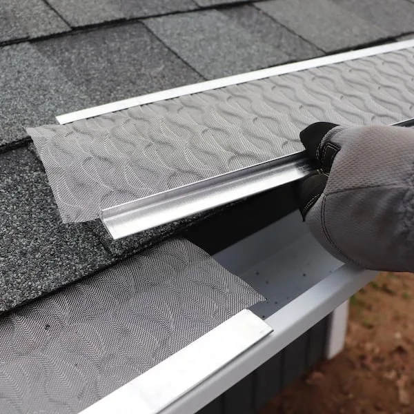

Gutter Installation
Seamless aluminum, sectional systems, fascia review, pitch planning, and tidy installation.
Read More →Compare installation, cleaning, repair, downspout, and gutter guard services from vetted local specialists. Built for homeowners who want clean rooflines, protected foundations, and clear next steps.

Seamless aluminum, sectional systems, fascia review, pitch planning, and tidy installation.
Read More →Debris removal, rinse-through checks, bagged cleanup, and clear water flow verification.
Read More →Leaks, loose hangers, sagging runs, seal failures, and storm-damaged sections corrected.
Request Match →Extensions, elbows, clogs, placement changes, and runoff direction for safer drainage.
Request Match →Guard selection and installation for leaf-heavy homes, steep roofs, and long-term upkeep.
Request Match →Seasonal checkups, storm readiness, and proactive service reminders through a clean email workflow.
Request Match →Flowline Gutters helps homeowners compare gutter-focused specialists for installation, cleaning, repairs, guards, and downspout work. Every match starts with the roofline, surrounding trees, drainage pressure, and the service outcome you need.

We center the request around gutters, guards, downspouts, roof pitch, and drainage instead of broad handyman categories.
Each inquiry captures the service type, property condition, timing, and visible symptoms before a quote conversation starts.
No forced calls. The request is routed through a clean form and email workflow.
Choose the gutter service, describe the issue, and include any roofline or drainage details you already know.
We organize the request around installation, cleaning, repair, guards, or downspout needs.
You receive a focused next step from a gutter professional who can confirm fit and estimate details.

Overflow often looks small until water starts finding the same weak point every storm. A focused gutter inspection can prevent the expensive part of the problem.
Start A Request


Most homes need cleaning at least once or twice a year. Homes near trees, heavy roof debris, or frequent storms may need more frequent service.
Replacement is usually considered when runs are heavily sagging, repeatedly leaking, rusted through, badly pitched, or no longer sized for the roof area.
No guard removes every maintenance need, but the right guard can reduce debris buildup and make routine cleaning easier.
Yes. Downspout extensions and better discharge points can move roof runoff away from foundation walls, landscaping, and walkways.
"The request form made it easy to explain overflow at the back corner of our house. The recommended provider knew exactly what to inspect."
"We needed cleaning and guard advice, not a full exterior sales pitch. The match was practical and the scope was clear."
"Our downspout was dumping water near the basement wall. The specialist helped reroute it with a simple, clean fix."
"The process felt premium but not bloated. We got a gutter-focused response and a realistic next step."
"Helpful for comparing installation and repair options after a storm pulled part of our gutter loose."
"The email-first form was a relief. We sent photos later and kept everything organized."
Send a clean request with the service type, property details, and preferred timing.